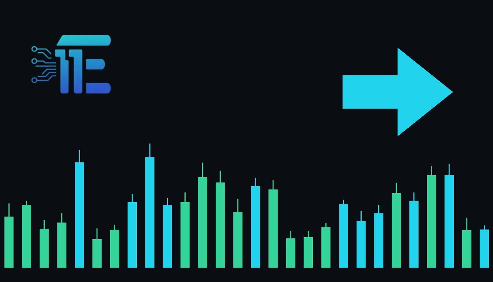

Gold Holds Near $3,930 Amid Iran Talks and Midtermsមាសរក្សាផ្ទះតម្លៃជុំវិញ 3,930 ដុល្លារ និងបោះឆ្នោតកណ្តាលអាណត្តិ
XAU/USD impact: ◆ Mixedផលប៉ះពាល់លើ XAU/USD: ◆ ចម្រុះ

Gold prices held steady near $3,930 an ounce as investors monitored diplomatic efforts regarding the U.S.-Iran conflict and awaited U.S. midterm election outcomes. These political and geopolitical factors shape the outlook for interest rates and safe-haven demand in the market.
តម្លៃមាសបានរក្សាស្ថិរភាពជុំវិញ 3,930 ដុល្លារក្នុងមួយអونس ខណៈអ្នកវិនិយោគតាមដានការទូតជុំវិញជម្លោះអ៊ីរ៉ង់ និងលទ្ធផលបោះឆ្នោតកណ្តាលអាណត្តិអាមេរិក។ កត្តាទាំងនេះជះឥទ្ធិពលដល់ការរំពឹងទុកអត្រាការប្រាក់ និងតម្រូវការសុវត្ថិភាពក្នុងទីផ្សារ។
Gold prices held near $3,930 an ounce on Tuesday as investors closely monitored fresh diplomatic efforts aimed at resolving the U.S.-Iran conflict. At the same time, market participants awaited the results of the U.S. midterm elections to gain clues on the future trajectory of interest rates and fiscal policy.
តម្លៃមាសបានរក្សាស្ថិរភាពជុំវិញ 3,930 ដុល្លារក្នុងមួយអونسកាលពីថ្ងៃអង្គារ ខណៈអ្នកវិនិយោគបានតាមដានយ៉ាងដិតដល់នូវកិច្ចខិតខំប្រឹងប្រែងផ្នែកទូតថ្មីៗដើម្បីដោះស្រាយជម្លោះរវាងសហរដ្ឋអាមេរិក និងអ៊ីរ៉ង់។ ជាមួយគ្នានេះ អ្នកចូលរួមទីផ្សារក៏កំពុងរង់ចាំលទ្ធផលនៃការបោះឆ្នោតកណ្តាលអាណត្តិរបស់សហរដ្ឋអាមេរិក ដើម្បីស្វែងរកតម្រុយអំពីទិសដៅអត្រាការប្រាក់ និងគោលនយោបាយសារពើពន្ធនាពេលអនាគតផងដែរ។
The transmission channel to XAU/USD operates primarily through safe-haven demand and shifting rate expectations. Geopolitical tensions in the Middle East and domestic political shifts in the United States directly influence the appeal of safe-haven assets and dictate broader movements in the US dollar and Treasury yields.
ច្រកបញ្ជូនទៅកាន់ XAU/USD និងការផ្លាស់ប្តូរការរំពឹងទុកអត្រាការប្រាក់។ និងការផ្លាស់ប្តូរនយោបាយក្នុងស្រុកនៅសហរដ្ឋអាមេរិក និងកំណត់ចលនា ευρេរបស់ដុល្លារអាមេរិក និងអត្រាប័ណ្ណបំណុលរតនាគារ។
On one hand, a escalation in diplomatic friction or unexpected election outcomes that boost safe-haven flows typically supports higher valuations for gold. On the other hand, signs of easing geopolitical tensions or fiscal policies that drive yields higher would likely pressure the precious metal.
ម្យ៉ាងវិញទៀត ឬលទ្ធផលបោះឆ្នោតដែលមិនរំពឹងទុក ម្យ៉ាងវិញទៀត ឬគោលនយោបាយដែលជំរុញអត្រាការប្រាក់ឱ្យកើនឡើង អាចនឹងដាក់សម្ពាធលើលោហៈមានតម្លៃនេះ។
Traders should watch upcoming diplomatic updates, final U.S. midterm election tallies, and broader currency and bond market reactions for the next directional clues.
លទ្ធផលបោះឆ្នោតកណ្តាលអាណត្តិអាមេរិក និងប្រតិកម្មរបស់ទីផ្សាររូបិយប័ណ្ណ និងបំណុល ដើម្បីស្វែងរកតម្រុយទិសដៅបន្ទាប់។
Key takeawaysចំណុចសំខាន់ៗ
- Gold held near $3,930 an ounce amid ongoing diplomatic talks and U.S. midterm elections.
- តម្លៃមាសបានរក្សាជុំវិញ 3,930 ដុល្លារ និងការបោះឆ្នោតកណ្តាលអាណត្តិអាមេរិក។
- Safe-haven demand and potential shifts in interest rate expectations remain key drivers for XAU/USD.
- និងការរំពឹងទុកអត្រាការប្រាក់នៅតែជាកត្តាជំរុញដ៏សំខាន់សម្រាប់ XAU/USD។
- Market participants continue to monitor geopolitical headlines and political outcomes for future direction.
- អ្នកចូលរួមទីផ្សារបន្តតាមដានព័ត៌មានភូមិសាស្ត្រនយោបាយ និងលទ្ធផលនយោបាយសម្រាប់ទិសដៅបន្ទាប់។
Original commentary by THE MARKET CODE, based on public reporting from Yahoo! Finance: GC=F News. Written with the help of AI. Educational only, not financial advice.
មតិវិភាគដើមដោយ THE MARKET CODE ផ្អែកលើការរាយការណ៍សាធារណៈពី Yahoo! Finance: GC=F News។ សរសេរដោយមានជំនួយពី AI។ មាតិកាអប់រំប៉ុណ្ណោះ មិនមែនជាដំបូន្មានហិរញ្ញវត្ថុទេ។